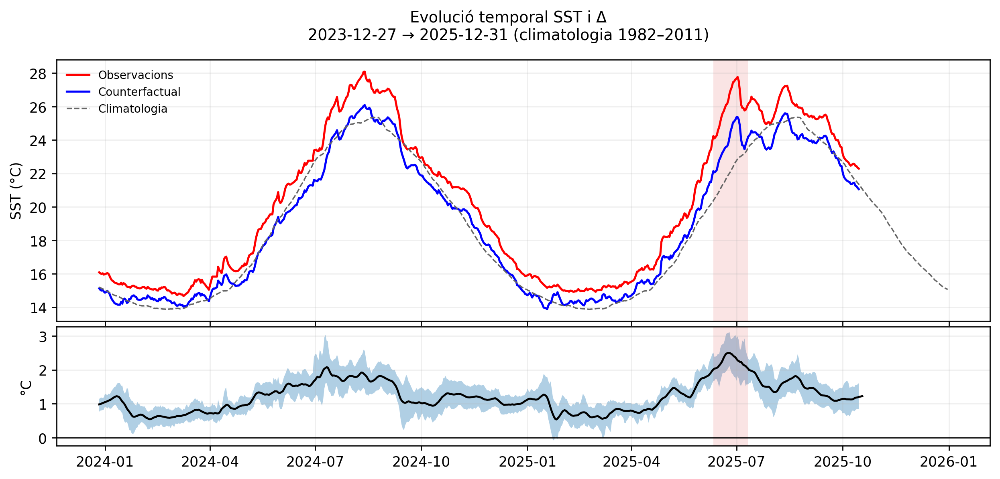

TFG - Visualitzacions interactives
Fes clic sobre la figura per obrir la versió interactiva.

Plot interactiu
SST observada vs contrafactual
Evolució temporal de la SST, climatologia i diferència observacions−counterfactual. Clica sobre la imatge per obrir el gràfic interactiu.